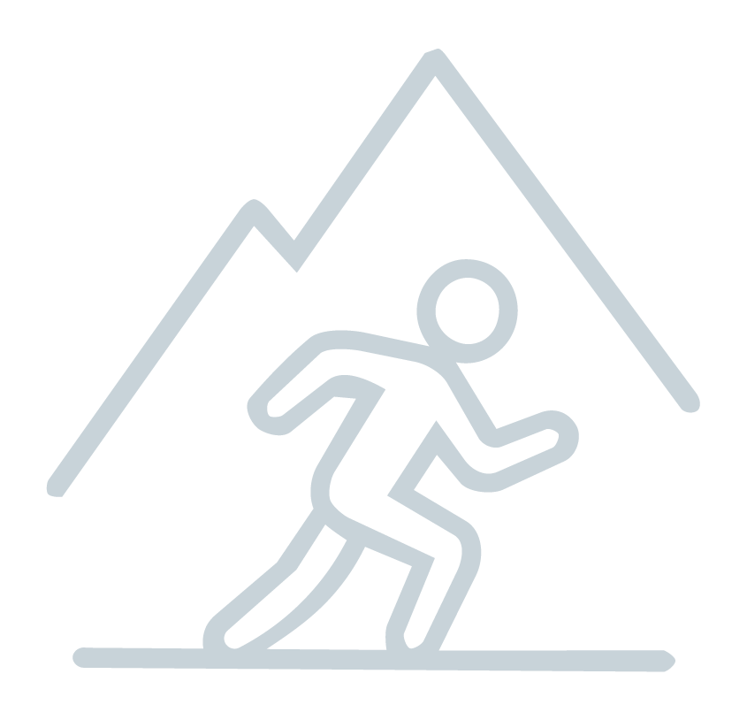
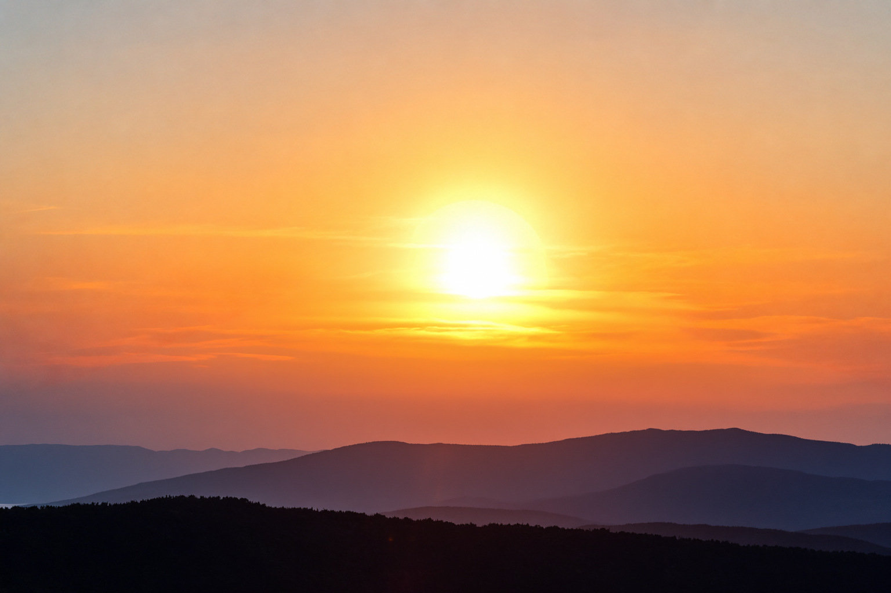
EXPLORÁ CON
CÚSPIDES
Preparación física, técnica y mental para enfrentarla montaña con resistencia, criterio y control.
Ver cursosBeneficios
del alpinismo
Resistencia
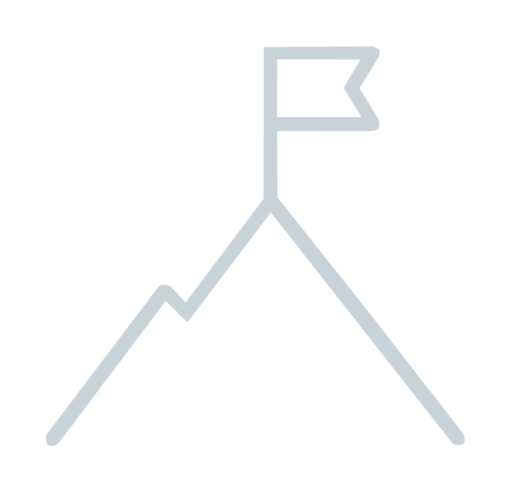
Disciplina y
perseverancia
Conecta con
la naturaleza
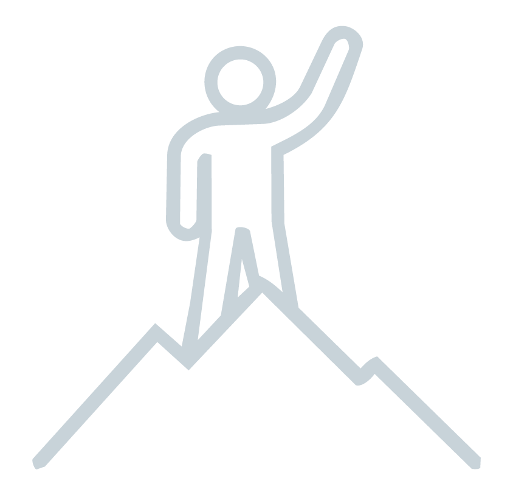
Superación
personal
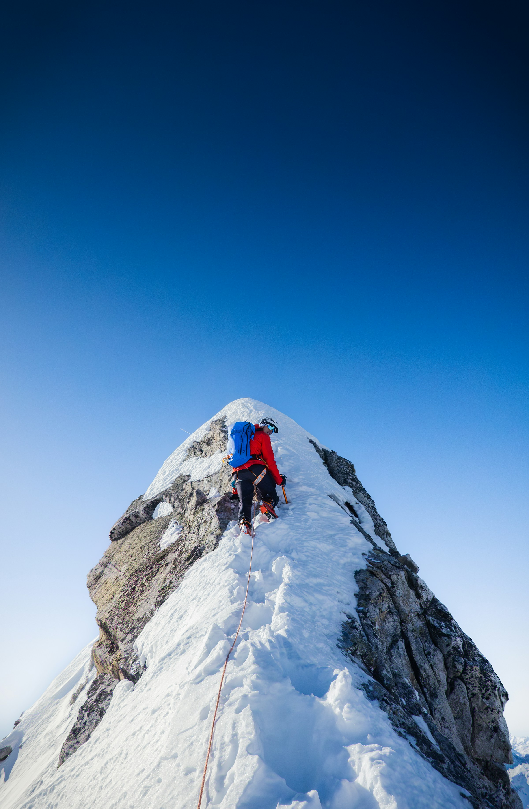
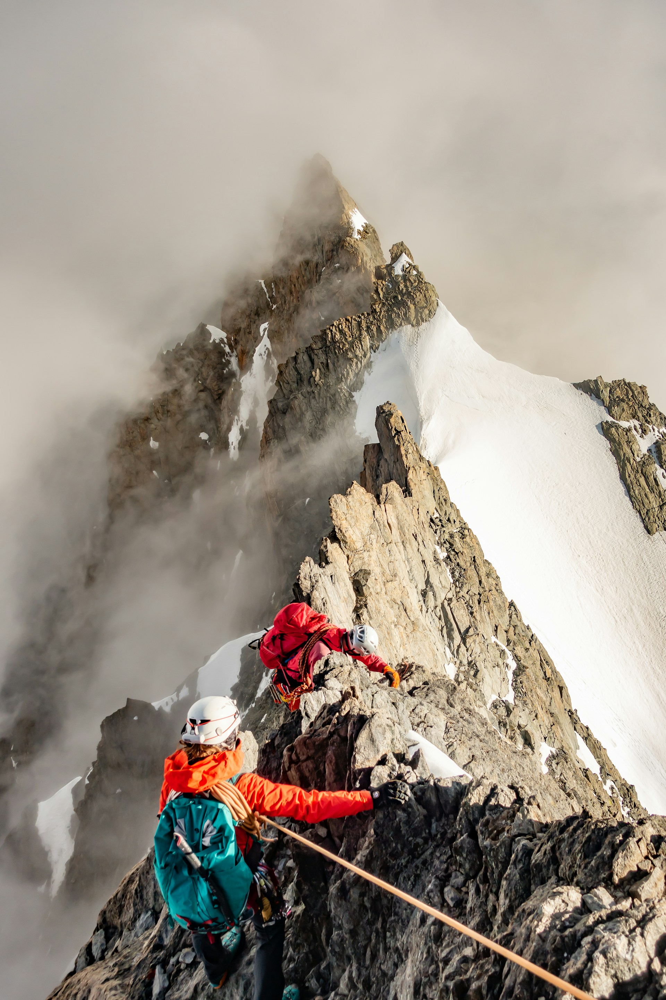
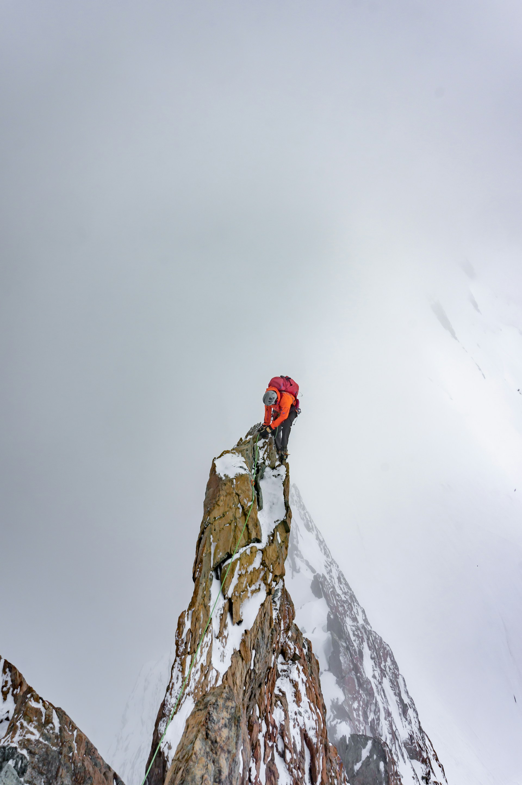
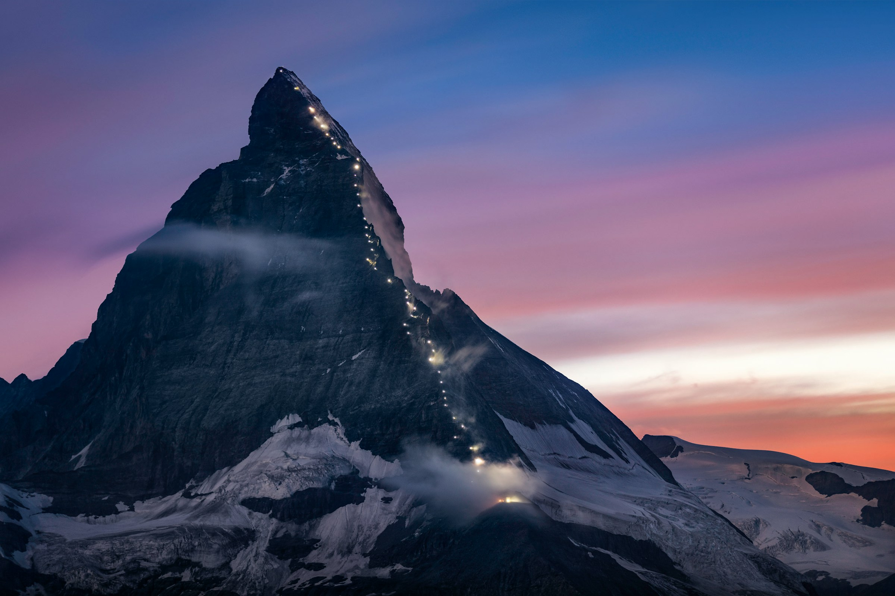
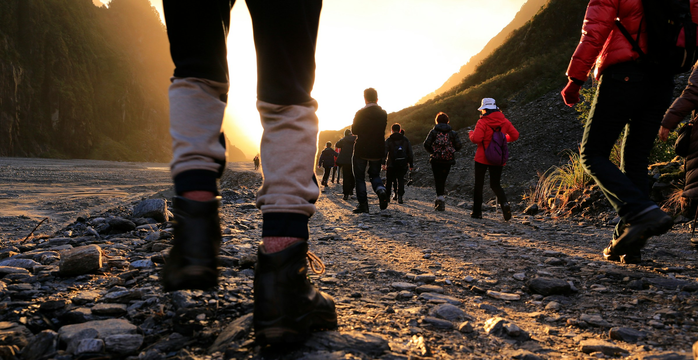
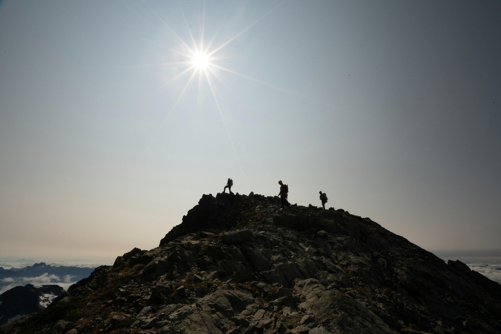
Sobre nosotros
La montaña no perdonala improvisación
Las cumbres no distinguen entre talento y experiencia, solo responden a la preparación.
Cúspides nació bajo una convicción simple: los desafíos extraordinarios exigen una preparación extraordinaria. Durante meses entrenamos cuerpo y mente para desarrollar resistencia, disciplina, control emocional y capacidad de adaptación.
Leer más
Monte Everest · Nepal / Tíbet · 8.849 m
Denali · Alaska · 6.190 m
Expediciones realizadas
01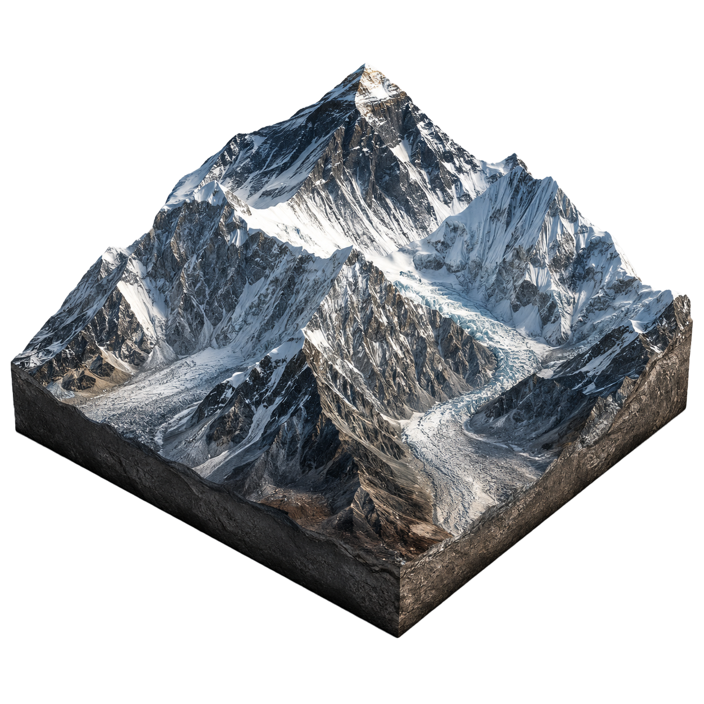
NUESTRO EQUIPO
Guías y entrenadores
En Cúspides reunimos entrenadores, guías de montaña y especialistas que trabajan de manera coordinada para llevar a cada integrante más allá de sus límites habituales.
0Miembros
del equipo
del equipo
0Ingresantes
por año
por año
0Años en
el rubro
el rubro
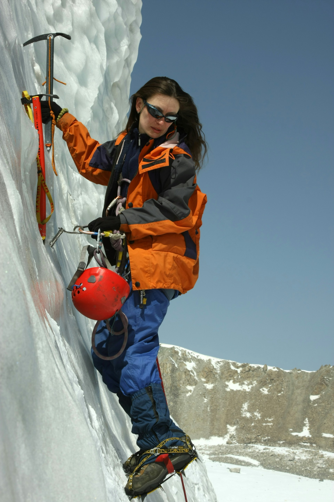
Bianca Ruiz
Directora de Preparación Física
BR
@bianca.ri
BiancaRuiz Ibarra
Directora de preparación física. Diseña programas de alto rendimiento para enfrentar la montaña con fuerza, resistencia y control.
128proyectos
12Kseguidores
4.9rating

Agustín Scattolin
Guía de Alta Montaña
AS
@agustin.sct
AgustínScattolin
Guía de montaña. Lidera entrenamientos en terreno y acompaña procesos de adaptación a entornos de alta exigencia.
96proyectos
9Kseguidores
4.8rating

Julia Mansilla
Entrenadora de Resistencia
JM
@julia.mansilla
JuliaMansilla
Entrenadora de resistencia. Especialista en capacidad aeróbica, fuerza funcional y rendimiento sostenido en ascensos prolongados.
114proyectos
15Kseguidores
4.9rating

Tomás Rodríguez
Instructor de Técnica Alpina
TR
@tomas.rodriguez
TomásRodríguez
Instructor de técnica alpina. Forma en desplazamiento, uso de equipamiento y seguridad técnica previa a la montaña.
87proyectos
8Kseguidores
4.7rating
Método
Cúspides
No se trata solo de entrenar para alcanzar una cima, sino de construir la resistencia, la técnica y la claridad mental necesarias para responder cuando la montaña exige más.


Evaluamos tu punto de partida
físico, técnico y mental.
Construimos resistencia, fuerza y
hábitos para sostener el esfuerzo.
Simulamos exigencias reales: terreno
y toma de decisiones.
Nuestros cursos
Elegí la fase que mejor acompaña tu preparación actual.
Testimonios
Conocé las experiencias de quienes llevaron su preparación al siguiente nivel.
Contacto
Escribinos y te orientamos para
elegir tu programa.
Lunes a viernes de 9 a 18 hs.
Consultas sobre cursos, disponibilidad e inscripciones.
Ciudad Universitaria, Pabellón 3, Buenos Aires.
Ubicación
Preguntas frecuentes
¿Qué programa me conviene elegir?
Base es ideal para empezar, Ascenso para mejorar rendimiento y Cúspide para quienes ya entrenan y buscan autonomía técnica.
Necesito experiencia previa?
No para Programa Base. Para Ascenso y Cúspide recomendamos una entrevista inicial para revisar tu estado físico y experiencia.
¿Dónde se realizan las clases?
La coordinación y encuentros principales son en FADU UBA, con salidas y prácticas según el programa elegido.
¿Cómo inicio la inscripción?
Completás el formulario, nos contás tu objetivo y te respondemos dentro de las 24 hs hábiles con el siguiente paso.